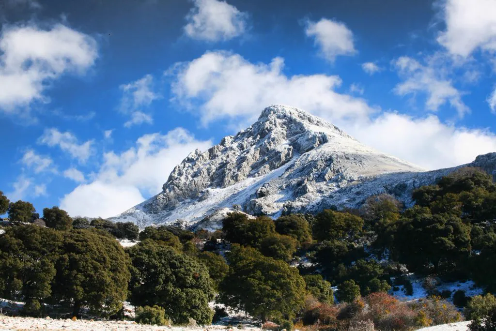
Puerto de la Mata1.600 m · Laderas norte y surEncinar con el pico Mágina al fondo. Aquí se voló la nube 3D que se explora más arriba y se construyó el escenario de Unreal Engine.
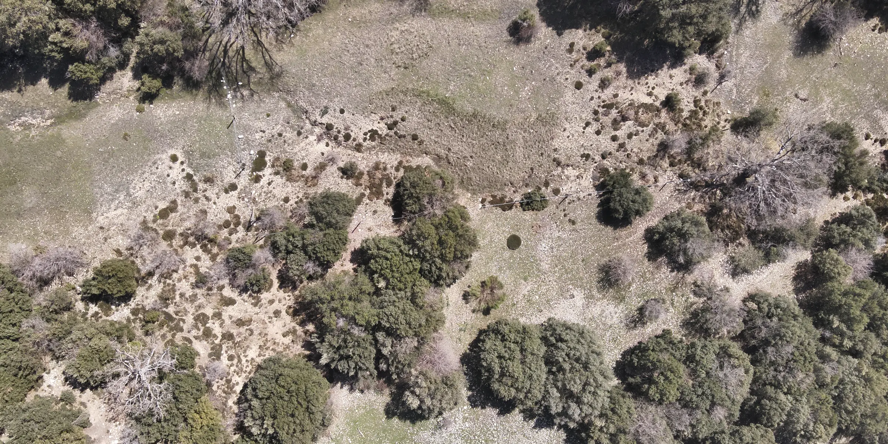
Proyecto PID2022-137938OA-I00 · 2023–2026
Digitalización multisensorial, modelado 3D y simulación del escenario actual y futuro de entornos naturales
NATUREYE estudia cómo digitalizar y modelar en 3D un espacio natural a partir de datos tomados con drones y satélites, y cómo usar ese modelo para simular su evolución. El trabajo se ha hecho en el Parque Natural de Sierra Mágina (Jaén).
Se han hecho vuelos en distintas estaciones del año con sensores LiDAR, hiperespectrales, multiespectrales, térmicos y cámaras RGB, y se han añadido series de imágenes Sentinel-2 y registros meteorológicos. Toda la información se organiza en una estructura de vóxeles en la que cada celda guarda su geometría, su respuesta espectral y las variables climáticas.
Con esos datos se localiza cada árbol, se identifica su especie por su firma espectral y su forma, y se obtiene su estructura en 3D. Los métodos están integrados en GEU, la plataforma de visualización y análisis del grupo, y en un escenario de Unreal Engine que muestra cómo podría cambiar la vegetación con más temperatura y menos lluvia.
Una muestra de 700.000 puntos de la nube capturada con dron el 8 de abril de 2024: 560 × 440 metros de monte mediterráneo entre 1.600 y 1.735 metros de altitud. Arrastra para girar, usa la rueda o pellizca para acercarte.
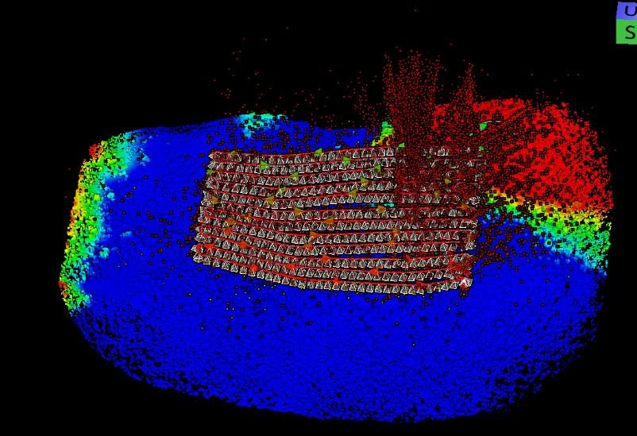
Nube RGB densificada a partir de imágenes del DJI Mavic 3M (93,9 millones de puntos en total). La altura de la vegetación se calcula sobre un modelo del suelo obtenido de la propia nube. El vigor (NDVI) se toma de las bandas roja e infrarroja cercana del mismo vuelo.
Desliza la línea para comparar el ortomosaico RGB con el NDVI del mismo vuelo (08/04/2024). Las copas salen en verde oscuro; los claros, el pasto y el camino, en tonos ocres.
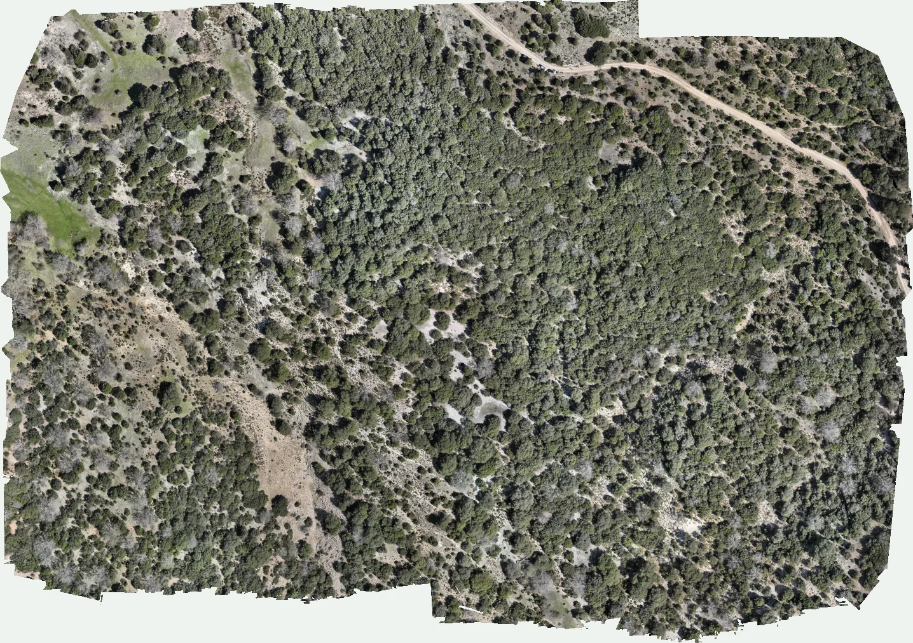
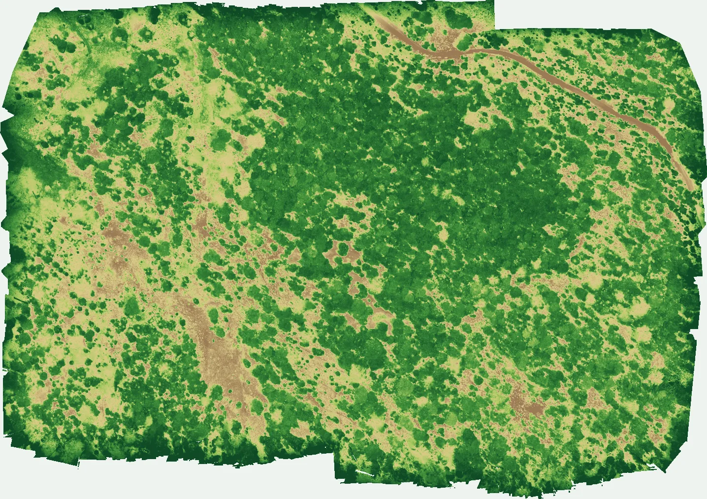
Color realNDVILa nube capturada con dron no es solo una imagen: sirve de base para construir un gemelo digital del monte. A partir de ella se genera el relieve, se colocan los individuos en su posición real y se recrea el paisaje en Unreal Engine.
Sobre ese escenario se pueden cambiar la luz, la atmósfera y el estado de la vegetación para ver cómo podría transformarse el lugar con más temperatura y menos lluvia.
El mismo rincón de Puerto de la Mata con tres ambientes distintos en Unreal Engine.
Tres zonas de unas 6 hectáreas en el Parque Natural de Sierra Mágina (Jaén), elegidas a distinta altitud y orientación para comparar cómo cambia la vegetación.

Puerto de la Mata1.600 m · Laderas norte y surEncinar con el pico Mágina al fondo. Aquí se voló la nube 3D que se explora más arriba y se construyó el escenario de Unreal Engine.
 Pico Mágina2.100 m · Laderas norte y sur
Pico Mágina2.100 m · Laderas norte y sur
La zona más alta de las tres, junto a la cumbre del parque.
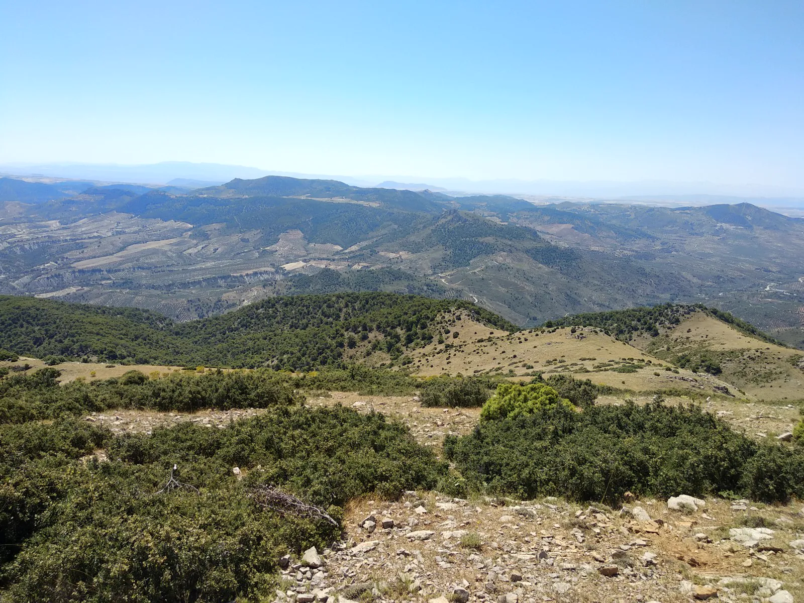
Sierra de la Cruz1.225 m · Ladera surLa zona más baja y oriental de las tres, en la ladera de solana.
Arrastra para moverte. Para girar e inclinar la vista, arrastra con el botón derecho o con dos dedos.

Fotografías de referencia tomadas en las zonas de estudio. Sirven para etiquetar cada individuo en las imágenes del dron y entrenar su identificación.
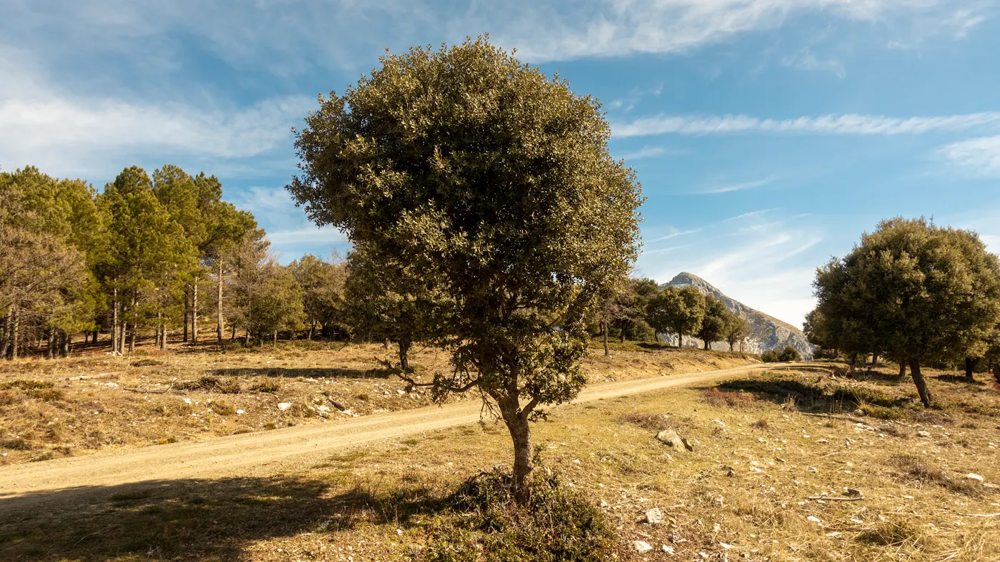


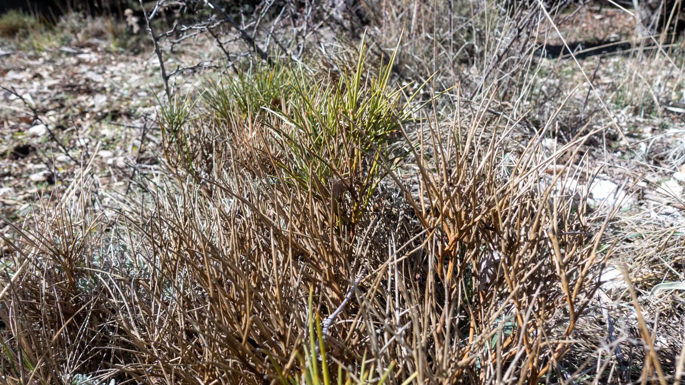


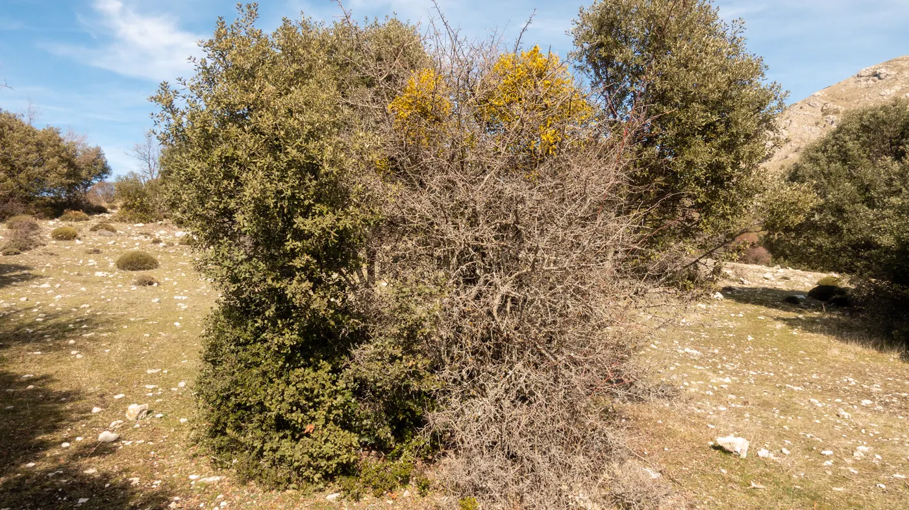
| Especie | Porte | Hoja | Rasgos visibles |
|---|---|---|---|
| EncinaQuercus ilex | Árbol | Perenne | Hoja elíptica de 5-7 cm, a veces espinosa; verde oscuro ceniciento |
| QuejigoQuercus faginea | Árbol | Caduca | Hoja elíptica y lobulada de 5-10 cm; brotes nuevos de verde muy vivo |
| MajueloCrataegus monogyna | Arbusto | Caduca | Hoja muy lobulada de 4-6 cm; espinas y frutos rojos |
| AgracejoBerberis hispanica | Arbusto | Caduca | Hoja cuneada y aserrada de 2-3 cm, verde brillante; espinas y frutos rojos o negros |
| Pino carrascoPinus halepensis | Árbol | Perenne | Acículas de hasta 8 cm |
| EspartoStipa tenacissima | Gramínea | Perenne | Hojas muy largas, como de junco, verde amarillento |
| Piorno azulErinacea anthyllis | Mata | Perenne | Ramas punzantes de verde muy oscuro; flores púrpuras |
| EchinospartumEchinospartum boissieri | Mata | Perenne | Tallos verdes que hacen la fotosíntesis, verde oscuro ceniciento; flores amarillas |
| Eléboro fétidoHelleborus foetidus | Hierba | Perenne | Hoja palmada y dentada de 5-15 cm, verde oscura; frutos amarillentos |
| Rosal silvestreRosa sp. | Arbusto | Caduca | Hoja imparipinnada y aserrada de 5-10 cm; aguijones y frutos rojos |
| MuérdagoViscum album | Epífita sobre árboles | Perenne | Hoja ovada de borde entero, verde amarillenta; frutos blancos |
Rasgos recogidos por el equipo para etiquetar los individuos en las imágenes del dron.
Modelos con los que se puebla el escenario de Unreal Engine. Gíralos con el ratón o el dedo. Las cotas marcan la altura total, la altura de la base de la copa y su diámetro.
Cargando modelo 3D…

Paso 1 de 5
Vuelos en distintas estaciones con LiDAR (Phoenix Scout-Ultra), cámara hiperespectral Headwall Nano-Hyperspec (270 bandas entre 400 y 1000 nm), cámaras multiespectral, térmica y RGB. Se completan con series de imágenes Sentinel-2 y registros meteorológicos.
Paso 2 de 5
Ortorrectificación de las imágenes hiperespectrales, ortomosaicos, nubes de puntos LiDAR y modelos digitales de elevación de las tres zonas de estudio.

Paso 3 de 5
La información hiperespectral y multiespectral se proyecta sobre la nube de puntos y se organiza en vóxeles: cada celda guarda su geometría, su reflectancia y las variables climáticas.

Paso 4 de 5
Se filtran el suelo y las sombras, se identifica cada individuo y se clasifica por su firma espectral, afinada con la forma de la copa. Un flujo híbrido LiDAR-hiperespectral recupera las especies objetivo a partir de pocos ejemplos.

Paso 5 de 5
Con los datos reales se construye un escenario 3D en Unreal Engine para ver cómo podría cambiar la vegetación con más temperatura y menos lluvia.
Dentro del proyecto se ha desarrollado un módulo de simulación predictiva integrado en GEU. El módulo entrena modelos de distribución de especies con Random Forest y MaxEnt a partir de registros de presencia (GBIF) y variables bioclimáticas (WorldClim), y proyecta su distribución con las proyecciones climáticas CMIP6 en distintos escenarios socioeconómicos (de SSP1 a SSP5) hasta 2070 y 2100.
Se ha aplicado a Sierra Mágina (Puerto de la Mata) y, como zona de contraste, al Parque Nacional de Ordesa y Monte Perdido. Los modelos alcanzan un AUC medio de 0,88 con Random Forest y 0,87 con MaxEnt. Los resultados se ven en GEU como nubes de puntos y mapas de calor, y en TerraPredict, una aplicación web con visores 2D y 3D, comparador de escenarios y descarga de resultados.
Trabajo Fin de Grado de Alberto Jiménez Expósito, «Simulación predictiva y visualización de escenarios naturales integrando información multisensorial» (Universidad de Jaén, 2026). Dirigido por Juan Manuel Jurado Rodríguez y David Jurado Rodríguez.


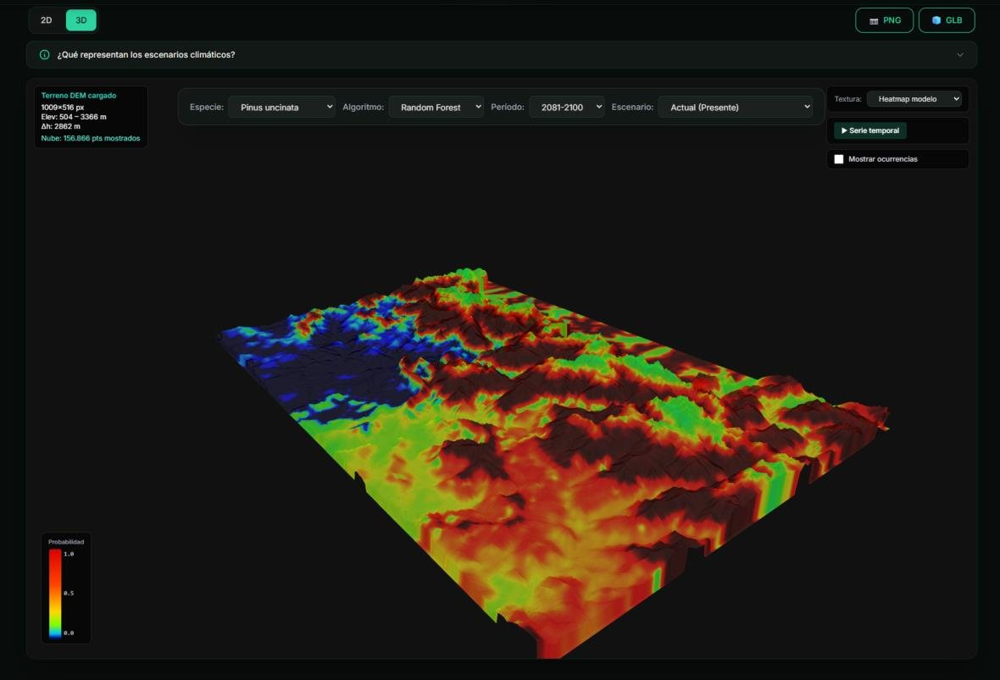
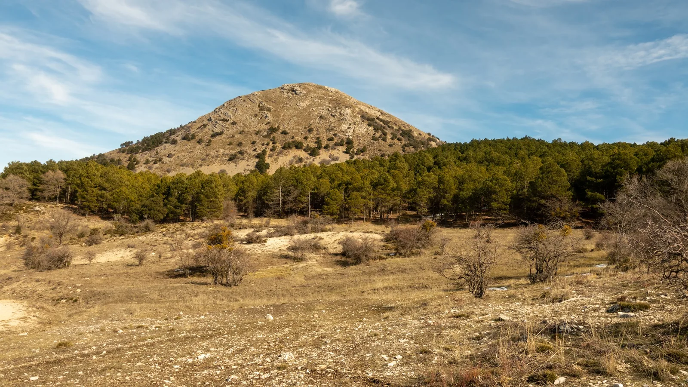


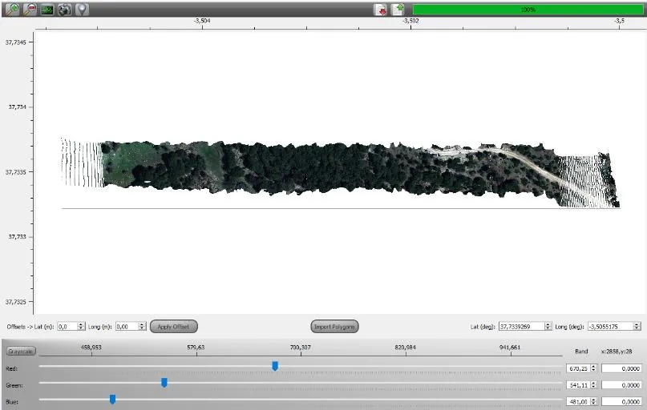
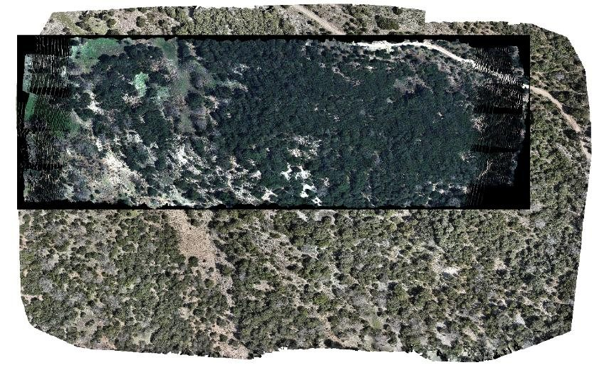


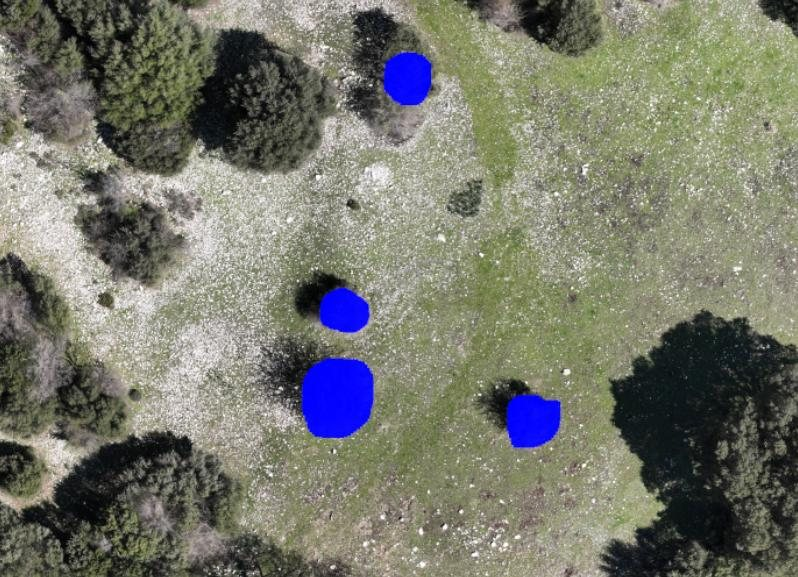


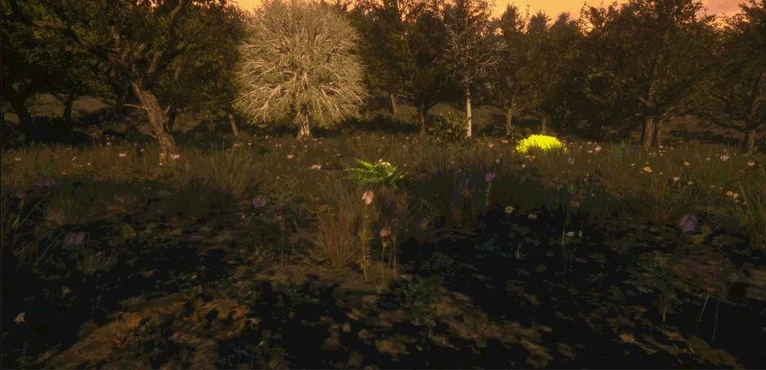
Smart Agricultural Technology2026
Latorre-Hortelano, P., Jurado-Rodríguez, D., Garrido-Almonacid, A., Parras-Rosa, M., Jurado, J. M.
14, 102230Acceso abiertoLeer el artículo
Graphical Models2026
Jurado-Rodríguez, D., Garrido, A., Feito, F. R., Jurado, J. M.
145, 101325Acceso abiertoLeer el artículo
IEEE Transactions on Visualization and Computer Graphics2025
Collado, J. A., López, A., Jurado, J. M., Jiménez, J. R.
31(10), 8026–8039Copia abierta en ZaguánLeer el artículo
Computers & Graphics2024
Jurado-Rodríguez, D., Latorre-Hortelano, P., René-Domínguez, L., Ortega, L. M.
122, 103982Leer el artículo
Además, en revisión o preparación
A Synthetic Hyperspectral Data Generation and Dimensionality Reduction Pipeline for Spectral Preservation and Classification. Domínguez-Fuentes, L. R., Jiménez-Pérez, J. R., Jurado, J. M., Jurado-Rodríguez, D. En revisión en Applied Computing and Geosciences
A Hybrid LiDAR–Hyperspectral Workflow for Target-Driven Tree-Species Retrieval in Mediterranean Forests. Sanabria, R., Carmona, E., Jurado-Rodríguez, D., Jurado, J. M. En preparación para un nuevo envío
2026
2025
2024
Tesis doctoralDefendida en 2024
José Luis Cárdenas Donoso
Sobresaliente cum laude
Tesis doctoralEn curso
Pablo Latorre Hortelano
Tesis doctoralEn curso
Luis René Domínguez Fuentes
TFM2025
Elena Carmona Vallecillo
TFG2026
Alberto Jiménez Expósito
Ver resultadosTFGEn curso
Geospatial and Environmental tools of UJA
Plataforma de fusión, análisis y visualización 3D de datos multisensoriales. Protección solicitada en la Universidad de Jaén.
Código abierto
Renderizado de nubes de puntos masivas en tiempo real.
github.com/Krixtalx/NimbusPlataforma web
Procesado en la nube de imágenes de dron y nubes de puntos: detección de individuos, dasometría, carbono y erosión.
savia.ujaen.esDatos generados por el proyecto en el Parque Natural de Sierra Mágina. Se publican con licencia CC BY 4.0: se pueden reutilizar citando la fuente. Los ficheros más grandes y las coordenadas exactas de especies protegidas se facilitan bajo petición.
Grupo de Informática Gráfica y Geomática, Universidad de Jaén (2026). NATUREYE: datos multisensoriales de Sierra Mágina [conjunto de datos]. Proyecto PID2022-137938OA-I00, MICIU/AEI/10.13039/501100011033 y FEDER, UE.
| Conjunto | Zona y fecha | Formato | Tamaño | Acceso |
|---|
Formatos abiertos, en ETRS89 / UTM 30N (EPSG:25830). Se leen con QGIS, CloudCompare, PDAL o GDAL. Para pedir un conjunto: inuouja@ujaen.es, indicando el nombre del conjunto y el uso previsto.


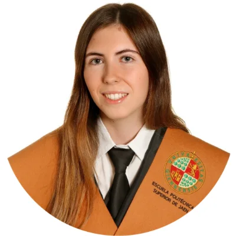

Proyecto PID2022-137938OA-I00 financiado por MICIU/AEI/10.13039/501100011033 y por FEDER, UE.